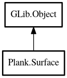

Surface
Object Hierarchy:

Description:
public class Surface : Object
A surface is a wrapper class for a Cairo.Surface. It encapsulates a surface/context and provides utility
methods.
Content:
Properties:
- public Surface Internal { construct; get; }
The internal Cairo.Surface backing the
surface.
- public int Width { construct; get; }
The width of the surface.
- public int Height { construct; get; }
The height of the surface.
- public Context Context { construct; get; }
A Cairo.Context for the surface.
Creation methods:
Methods:
- public void clear ()
Clears the entire surface.
- public Surface copy ()
Create a copy of the surface
- public Surface scaled_copy (int width, int height)
Create a scaled copy of the surface
- public Pixbuf to_pixbuf ()
Saves the current surface to a Gdk.Pixbuf.
- public Surface create_mask (double threshold, out Rectangle extent)
Computes the mask of the surface.
- public Color average_color ()
Computes and returns the average color of the surface.
- public void fast_blur (int radius, int process_count = 1)
Performs a fast blur on the surface.
- public void exponential_blur (int radius)
Performs an exponential blur on the surface.
- public void gaussian_blur (int radius)
Performs a gaussian blur on the surface. Note: This method is
wickedly slow
Inherited Members:
All known members inherited from class GLib.Object
- @new
- new_valist
- newv
- add_toggle_ref
- add_weak_pointer
- bind_property
- connect
- constructed
- disconnect
- dispose
- dup_data
- dup_qdata
- freeze_notify
- @get
- get_class
- get_data
- get_property
- get_qdata
- get_type
- notify_property
- @ref
- ref_sink
- replace_data
- replace_qdata
- remove_toggle_ref
- remove_weak_pointer
- @set
- set_data
- set_data_full
- set_property
- set_qdata
- set_qdata_full
- steal_data
- steal_qdata
- thaw_notify
- unref
- watch_closure
- weak_ref
- weak_unref
- notify
- ref_count